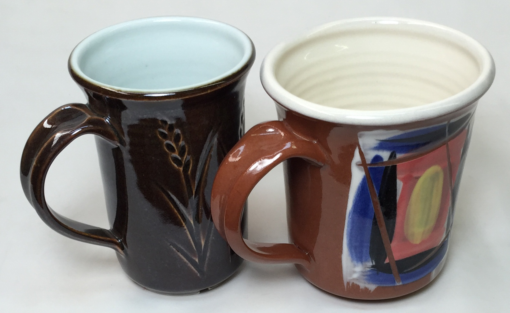
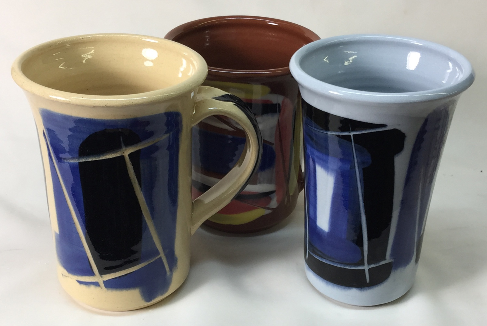
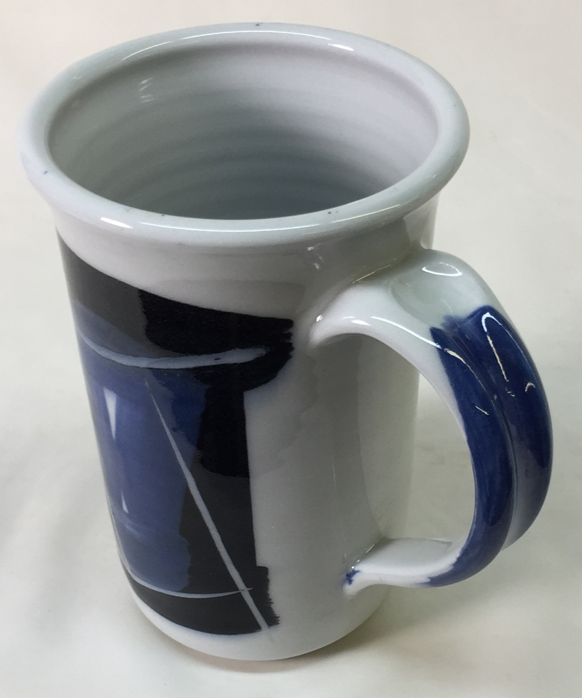
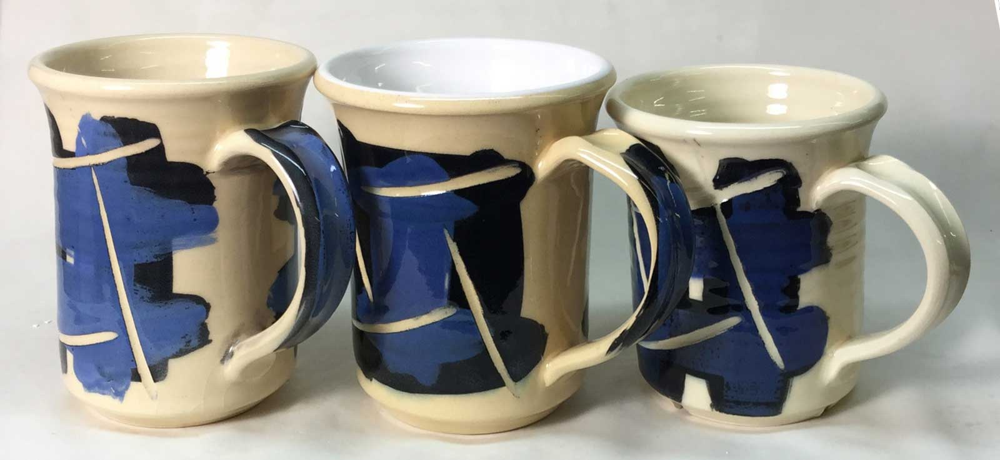
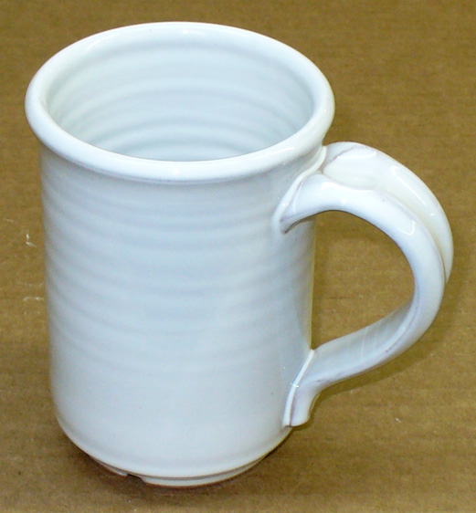

A Low Cost Tester of Glaze Melt Fluidity
A One-speed Lab or Studio Slurry Mixer
A Textbook Cone 6 Matte Glaze With Problems
Adjusting Glaze Expansion by Calculation to Solve Shivering
Alberta Slip, 20 Years of Substitution for Albany Slip
An Overview of Ceramic Stains
Are You in Control of Your Production Process?
Are Your Glazes Food Safe or are They Leachable?
Attack on Glass: Corrosion Attack Mechanisms
Ball Milling Glazes, Bodies, Engobes
Binders for Ceramic Bodies
Bringing Out the Big Guns in Craze Control: MgO (G1215U)
Can We Help You Fix a Specific Problem?
Ceramic Glazes Today
Ceramic Material Nomenclature
Ceramic Tile Clay Body Formulation
Changing Our View of Glazes
Chemistry vs. Matrix Blending to Create Glazes from Native Materials
Concentrate on One Good Glaze
Copper Red Glazes
Crazing and Bacteria: Is There a Hazard?
Crazing in Stoneware Glazes: Treating the Causes, Not the Symptoms
Creating a Non-Glaze Ceramic Slip or Engobe
Creating Your Own Budget Glaze
Crystal Glazes: Understanding the Process and Materials
Deflocculants: A Detailed Overview
Demonstrating Glaze Fit Issues to Students
Diagnosing a Casting Problem at a Sanitaryware Plant
Drying Ceramics Without Cracks
Duplicating Albany Slip
Duplicating AP Green Fireclay
Electric Hobby Kilns: What You Need to Know
Fighting the Glaze Dragon
Firing Clay Test Bars
Firing: What Happens to Ceramic Ware in a Firing Kiln
First You See It Then You Don't: Raku Glaze Stability
Fixing a glaze that does not stay in suspension
Formulating a body using clays native to your area
Formulating a Clear Glaze Compatible with Chrome-Tin Stains
Formulating a Porcelain
Formulating Ash and Native-Material Glazes
G1214M Cone 5-7 20x5 glossy transparent glaze
G1214W Cone 6 transparent glaze
G1214Z Cone 6 matte glaze
G1916M Cone 06-04 transparent glaze
Getting the Glaze Color You Want: Working With Stains
Glaze and Body Pigments and Stains in the Ceramic Tile Industry
Glaze Chemistry Basics - Formula, Analysis, Mole%, Unity
Glaze chemistry using a frit of approximate analysis
Glaze Recipes: Formulate and Make Your Own Instead
Glaze Types, Formulation and Application in the Tile Industry
Having Your Glaze Tested for Toxic Metal Release
High Gloss Glazes
Hire Us for a 3D Printing Project
How a Material Chemical Analysis is Done
How desktop INSIGHT Deals With Unity, LOI and Formula Weight
How to Find and Test Your Own Native Clays
I have always done it this way!
Inkjet Decoration of Ceramic Tiles
Is Your Fired Ware Safe?
Leaching Cone 6 Glaze Case Study
Limit Formulas and Target Formulas
Low Budget Testing of Ceramic Glazes
Make Your Own Ball Mill Stand
Making Glaze Testing Cones
Monoporosa or Single Fired Wall Tiles
Organic Matter in Clays: Detailed Overview
Outdoor Weather Resistant Ceramics
Painting Glazes Rather Than Dipping or Spraying
Particle Size Distribution of Ceramic Powders
Porcelain Tile, Vitrified Tile
Rationalizing Conflicting Opinions About Plasticity
Ravenscrag Slip is Born
Recylcing Scrap Clay
Reducing the Firing Temperature of a Glaze From Cone 10 to 6
Setting up a Clay Testing Program in Your Company or Studio
Simple Physical Testing of Clays
Single Fire Glazing
Soluble Salts in Minerals: Detailed Overview
Some Keys to Dealing With Firing Cracks
Stoneware Casting Body Recipes
Substituting Cornwall Stone
Super-Refined Terra Sigillata
The Chemistry, Physics and Manufacturing of Glaze Frits
The Effect of Glaze Fit on Fired Ware Strength
The Four Levels on Which to View Ceramic Glazes
The Potter's Prayer
The Right Chemistry for a Cone 6 Magnesia Matte
The Trials of Being the Only Technical Person in the Club
The Whining Stops Here: A Realistic Look at Clay Bodies
Those Unlabelled Bags and Buckets
Tiles and Mosaics for Potters
Toxicity of Firebricks Used in Ovens
Trafficking in Glaze Recipes
Understanding Ceramic Materials
Understanding Ceramic Oxides
Understanding Glaze Slurry Properties
Understanding the Deflocculation Process in Slip Casting
Understanding the Terra Cotta Slip Casting Recipes In North America
Understanding Thermal Expansion in Ceramic Glazes
Unwanted Crystallization in a Cone 6 Glaze
Using Dextrin, Glycerine and CMC Gum together
Volcanic Ash
What Determines a Glaze's Firing Temperature?
What is a Mole, Checking Out the Mole
What is the Glaze Dragon?
Where do I start in understanding glazes?
Why Textbook Glazes Are So Difficult
Working with children
The Majolica Earthenware Process
Description
How to make strong, durable functional ware from red terra cotta odies based on the traditional of majolica.
Article
Traditionally, “Majolica” is white-glazed red earthenware clay decorated with over-glaze brush work designs. But I am guessing you are not at this page for a history lesson. You want to make ware that looks like Majolica. Even durable functional ware. Although the formidable challenges took hundreds of years to overcome, with a methodical approach you can have the process working relatively quickly! Notwithstanding that, some aspects of earthenware are more difficult to perfect than with stoneware.
I am also guessing that you are open to improving the process and ware quality by taking advantage or modern materials and equipment. Today, there is no compelling reason to use tin to opacify your glazes, zircon is less expensive. You can even dispense with the white glaze and use a white engobe with a transparent overglaze. And certainly not a lead flux to melt glazes. It is also reasonable to fire a little higher for better ware strength (a lot better). Or even flux the body to get better strength. And why not introduce new decoration materials and techniques we have now?
Common Misconceptions About Low Fire
- Higher temperatures must be better, stronger.
No. Strength is a function of vitrification, bodies can vitrify to very low temperatures if they contain enough fluxes. Consider that many people working with ironware bodies at cone 10 reduction are producing ware that ranges about 4000 psi in tensile strength. Likewise, working at middle-fire produces stoneware of around 5000 psi. Porcelains, on the other hand can be 10,000 psi. However, a considerable percentage of these producers are using glazes that do not fit (e.g. high feldspar) and that can easily cut the strength of the ware in half (even without visible crazing or shivering out of the kiln). This means there are lots of potteries and manufacturers producing high-fire ware at 2000-5000 psi. However, with a properly fitted glaze, it is possible to easily achieve 5000 psi at cone 03! - Lower temperatures produce leaching glazes.
So do higher temperatures. It is possible to have unbalanced glazes, that leach heavy metals, at any temperature. However, low fire glazes are normally made from fritted materials that the frit manufacturer has blended to be stable (stoichiometric). Boron is the primary flux in these products and it itself is safe. Food surfaces in majolica ware are usually just transparent or white zirconium opacified glazes, will present no danger. However, lots of manufacturers and potters are producing stoneware with metallic surface decoration re-fired in the cone 018 range. That is hundreds of degrees below the cone 03 I like to use, it is obvious which is going to leach less. - Bright colores glazes do not work on red burning iron bodies.
Wrong. Look at the back side of most ceramic tiles. They are red. Why? Manufacturers are taking advantage of the strength of red earthenware clays at low temperatures (to save energy). But they apply a white engobe to the front as a base for the glazes.
Majolica Characteristics We Could Leave Behind
- Most museum majolica ware is crazed.
This is also often true of that produced by potters today. Notwithstanding that, it is easy to fine-tune glaze and body thermal expansions and improve the body-glaze interface to avoid this issue. And we can vitrify the body more to eliminate moisture expansion that produces delaid crazing. - Most museum majolica ware is chipped and cracked and does not appear strong.
True again. That is because historical ware was fired at very low temperatures. The same is typical today (e.g. cone 06). However, even the most inexpensive hobby kilns now can easily fire to cone 03, a temperature high enough to produce much stronger and more functional ware. Even stoneware. This works with almost all terra cotta bodies. Most people are quite surprised to hear the tuning-fork-like ring of vitreous low fire ware. - Most museum majolica ware is porous.
To the point of being a sponge! These would likely absorb up to 15% of their weight in water, making every unglazed spot an entry point for water-logging. As noted above, we can fix this. Terra cotta body colour gets brighter red and much denser as it is fired closer toward and up to cone 03.
Low Fire Advantages
Majolica is techically terra cotta with a white glaze. What are some advantages of terra cotta (especially at a higher-than-normal temperature)?
- It is inexpensive to fire. Firing a kiln to cone 04-03 is vastly less energy consuming than cone 6, for example. Three hour cold-to-cold firing cycles are possible in smaller ordinary potters electric kilns.
- Ware fired to cone 03 with a good-fitting glaze will ring like a tuning fork (if the body is vitreous).
- Ware takes on a whole new life when color is applied. Even school children can produce amazingly attractive majolica-like ware. The kinds of bright colours possible at low fire make stoneware potters jealous.
- Stain-based colors need only be applied in a thin wash for vibrant results and most can be blended to produce intermediates.
- You can show off. If you have painting or brush-working skills, these will shine on majolica-inspired ware. This is because the heavily opacified glaze produces a stiff melt that is very stable, overglaze colors stay put and there is very little feathering on the edges of brush strokes. The fidelity is so good that a finger print on a brush stroke can be visible on the fired surface. Stain powders can be used like water-color paints and you can blend colors in a similar manner.
- Low fire glazes are more transparent, even crystal clear. This makes it practical to decorate ware using colored slips and engobes at leather hard stage, then bisque and apply a transparent to finish the piece.
- The modern majolica-inspired process is not fragile. It does not rely on special firing tricks or critical material mixes. It is stable and reproducible and tolerant of variations.
- Red terra cotta clays can be robust in the kiln. They hold up well during firing making it possible to create very overhung and exaggerated shapes. Mugs do not go oval, handles do not sag, and clay foot-rings do not stick to the kiln shelf at lower tempertures.
- Our majolica can be bisque fired at cone 03 and glaze fired at a cooler 04. This means that the glaze does not have to pass bubbles from products of decomposition given off from the body during firing. This produces a more defect-free glazed surface.
- Terra cottas are normally extremely fine and very plastic. And many dry very well. In India, for example, potters expect their ware to sun dry.
A few things to be aware of:
- To cover well, white glazes must be applied evenly and much thicker than for porcelain or stoneware. While the white glaze is opaque, the red color of the clay body underneath will darken areas where the glaze is thin. All edges must be rounded, especially the lips of vessels. Corners, angles, and sharp edges don't cover well. It is important to apply the glaze in an even thickness over the entire cross section. Do whatever it takes to accomplish this, whether it be mixing more so you can immerse ware, adding a gum to the glaze, gelling it so it has thixotropy, spraying it, waxing and glazing different areas in a multiple-stage process, heating the ware before glazing, deflocculating the glaze, sanding away the drips, etc.
- Ware cannot be too thin and light. If walls of ware are thin, the clay will lack enough absorbency to build an adequately thick, and therefore opaque, layer of glaze.
- Low fire red clays often contain significant soluble salts that can deposit on the surface during drying, leaving an unsightly whitish scum and affecting the overlying glaze. Make sure your supplier is putting enough barium carbonate in the mix to precipitate these salts. Don't worry about barium leaching, it is under the glaze, it transforms to nontoxic barium sulphate during precipitation. And it participates in glass-building during the firing.
- Crazing and shivering are far more likely at lower temperatures because the less developed interface between clay and glaze is less able to absorb a bad fit. This is actually a blessing in disguise because it forces you to compensate. Crazing is more likely on a body made of clay materials only, shivering on bodies containing talc. Use an expansion-adjustable glaze recipe (e.g. Zero3 recipe). If possible, get the clay/glaze combination strength-tested to make sure the glaze fits, even if there is no visible problem. One more thing to remember: Low fire body manufacturers do not normally maintain the thermal expansion of the bodies they make. Further, it can be different depending on the firing temperature. The bottom line: You need an adjustable glaze to adapt to different batches.
- Cover the ware as completely with glaze as possible. The best way to do this is make sure every item has a foot ring. Glaze the entire piece and only remove a small amount of glaze where the foot right contacts the shelf. This will limit the surfaces where water can be absorbed.
- Watch out for the temperature at which clay-color transition occurs. Most terra cotta clays change from the classic flower pot orange to dark brown over the range cone 06 to 2. It is not wise to fire near the upper part of this range since accidental over-firing will result in more drastic color differences (accompanied by greater tendency to warp, blister and gas-bubble glazes). Typical terra cotta clays transition around cone 01, thus cone 02 is not an ideal range. Keep in mind that if you use a transparent glaze the clay will be much darker under the glaze than it is without glaze. This is because the glaze melt matures the surface so it appears several cones darker.
- Manufacturers have limitations on how well they can maintain the consistency of terra cotta bodies. The materials used to make them are more variable by nature than the kaolins, feldspars, silica, etc. used in stonewares and porcelains. If a batch has 14% porosity one time (at cone 06) and 10% the next no one gets upset about it. However they should maintain the drying shrinkage and performance (employing formulations that enable this).
- White-dotting in colored areas of glaze is a common problem. It is minimized by bisquing higher than glaze and not firing too quickly.
- If the dried glaze layer is excessively dusty, add some gum to harden it.
- Get a good banding wheel for decorating your ware.
- In glaze recipes, use frits if at all possible, not Gerstley Borate (a raw source of boron). The latter is unreliable and its manufacturer cannot stand behind the product's quality.
Getting Started
- Get a terra cotta clay that fires to a nice red at cone 03 with good strength. Try firing it to cone 02 and 1 to verify that it is a true terra cotta. It should be transitioning to dark brown by cone 1. Also, make sure the material has a fine particle size, a least 100 mesh and finer. This is important to prevent pinholing that occurs in bodies having larger particles (these either generate gases that have to bubble up through the glaze or act as vents through which large volumes of other gases are vented at fewer sites on the body surface). If you want a super cone 03 red body, consider making it yourself. Start with the Zero3 recipe.
- Test glaze fit. Perform a boil-ice test by immersing a fired glazed tile in ice water for five minutes, then boiling water for five minutes. Repeat this three times and check for crazing or shivering.
- Glaze recipe: Don't buy this, mix it. That is right. The clear glaze (and adapting its fit to your body) are so important that you cannot trust it to anyone else. You can make a better one that you can buy. Start with my Zero3 recipe (actually there are 3, you blend them to fine tune the thermal expansion). Or develop your own clear glazes. Choose a frit that is a complete glaze in itself (like Ferro 3195 or 3124) and just add 15% kaolin (EPK is useful because of its excellent slurry-suspending and gelling properties). Integrate Frit 3110 to raise thermal expansion (for shivering) and 3249 to reduce it (for crazing).
- Mix the glaze slurry so it has thixotropy. This will prevent it from settling and enable you to apply even coverage on bisque that dries quickly.
- Make large bisque glaze testing tiles of the body (10 cm). Apply the glaze quite thick and fire to cone 04, 03, 02 and note the gloss and tendency to run. If it is running too much for cone 03, add a little kaolin (5%) to raise the melting temperature (if the glaze is crazing add silica instead). If the melt fluidity is too high, add a mix of kaolin and silica having the same Si:Al ratio as the glaze.
- Adjust whiteness. Add 12% zircon opacifier (i.e. Zircopax or Superpax) to a transparent to make it white. Mix the glaze and try it again on a tile. If the color is not white enough, increase the opacifier to 15% or more, but be careful since zircon increases glaze melt viscosity, and thus, raises the likelihood of crawling and pinholing. It also lowers thermal expansion, so test for shivering.
- Colors: Hundreds of over and underglaze commercial products are available. It is best to use these instead of developing your own. These are made by adding stains to a transparent glaze that melts to the desired degree (more for overglaze, less for under). The liquid portion is a gum:water mix to make the product paint smoothly and dry slowly. Try different brands, some will work better than others (much better). If you need to use large amounts of these it might be worthwhile to develop your own.
- Engobe: Ceramic tile companies apply a layer of white engobe onto the red body before applying the glaze. This white layer is a white clay having a firing shrinkage and thermal expansion the same as the body, an engobe. Because it does not melt, it is opaque. This enables using glazes much lower in zircon (or even zircon free) and they fire with bright colors as if on porcelain. But developing an engobe is not for the faint-hearted (our Zero3 engobe development project is well documented here). The engobe-body bond is much more fragile than the glaze-engobe one. As a result, glazes must fit very well to avoid flake-off on wrap-around areas (like rims of mugs). Your clay body supplier should be able to supply an engobe recipe compatible with their fine terra cotta. If they just tell you to use a an internet recipe, do no believe it will work until testing thoroughly. Also, note that colouring engobes is expensive because high stain proportions are required. This changes the drying, firing shrinkage and thermal expansion; it is a new animal requiring thorough fit testing.
Armed with the above working materials, spend the rest of your life investigating the infinite number of combinations, colors, and decorative techniques possible. Enjoy.
Related Information
Which is stronger: Cone 10R mug or cone 03 mug?

This picture has its own page with more detail, click here to see it.
The mug on the left is high temperature Plainsman P700 (Grolleg porcelain). The other is Plainsman Zero3 fired at cone 03. Zero3 has a secret: Added frit which reduces the porosity of the terra cotta base (therefore increasing the density) dramatically. How? The frit melts easily at cone 03 and fills the interparticle space with glass, that glass bonds everything together securely as the piece cools. Although I do not have strength testing equipment right now, I would say that although the P700 mug likely has a harder surface, the Zero3 one is less brittle and more difficult to break.
Low Temperature Heaven:
Commercial underglazes, make your own clear overglaze

This picture has its own page with more detail, click here to see it.
Decorate ware with the underglazes at the leather hard stage, dry and bisque fire it and then dip-glaze in a transparent that you make yourself (and thus control). These mugs are fired at cone 03. All have the same transparent glaze (G2931K), all were decorated with the same underglazes. Notice how bright the colors are compared to middle or high temperature. On the left is a porous talc/stoneware blend (Plainsman L212), rear is a fritted Zero3 stoneware and right is Zero3 fritted porcelain. When mixed properly you can dip ware in this glaze and it covers evenly, does not drip and dries enough to handle in seconds! Follow the Zero3 firing schedule and you will have ware of amazing quality.
G2931K Zero3 transparent glaze on Zero3 Fritware Porcelain

This picture has its own page with more detail, click here to see it.
This is an all-fritted version of G2931F Zero3 transparent glaze. I formulated this glaze by calculating what mix of frits must be employed to supply the same chemistry of the G2931F recipe. The mug is made from the Zero3 porcelain body (fired at cone 03) with this glaze. This glaze fits both the porcelain and the Zero3 terra cotta stoneware. The clarity, gloss, fit and durability of this glaze are outstanding.
Three low fire bodies need three different clear glazes. Why?

This picture has its own page with more detail, click here to see it.
Glaze fit. The left-most clay mug contains no talc (Plainsman Buffstone), the centre one about 25% talc (L212) and the right one is about 45% talc (L213). Talc raises thermal expansion. The centre glaze is G2931K, it is middle-of-the-road thermal expansion (Insight-live reports it as 7.4) and fits the low-talc bodies (and Zero3 porcelain and stoneware). But it crazes on Buffstone and shivers on L213. The lesson is: Forget about expecting one clear or base glaze to fit all low fire bodies. But there is a solution. I adjusted it to reduce its expansion to work on zero-talc porous bodies and raise it to work on high talc bodies. How? By decreasing and increasing the KNaO (in relation to other fluxes). The three fire crystal clear and work the best in a drop-and-hold firing.
Soluble salts on cone 04 terra cotta clay bodies

This picture has its own page with more detail, click here to see it.
Low temperature clays are far more likely to have this issue. And if present, it is more likely to be unsightly. The salt-free specimens have 0.35% added barium carbonate.
Test bars of different terra cotta clays fired at different temperatures

This picture has its own page with more detail, click here to see it.
Bottom: cone 2, next up: cone 02, next up: cone 04. You can see varying levels of maturity (or vitrification). It is common for terra cotta clays to fire like this, from a light red at cone 06 and then darkening progressively as the temperature rises. Typical materials develop deep red color around cone 02 and then turn brown and begin to expand as the temperature continues to rise past that (the bottom bar appears stable but it has expanded alot, this is a precursor to looming rapid melting). The top disk is a cone 10R clay. It shares an attribute with the cone 02 terra cotta. Its variegated brown and red coloration actually depends on it not being mature, having a 4-5% porosity. If it were fired higher it would turn solid chocolate brown like the over-fired terra cotta at the bottom.
Stoneware from your terra cotta body? It is very possible.

This picture has its own page with more detail, click here to see it.
Some terra cotta clays can be used to produce stoneware by firing them a few cones higher. Terra Cottas are almost always nowhere near vitrified at their traditional cone 04-06 temperatures, so they can often stand much higher firing. However, clear glazes do not usually work well in higher firing since products of decomposition from the vitrifying body fill them will micro bubbles, clouding the surface. In addition, the body turns dark brown under clear glazes. But with a white glaze, these are not a problem. This is Plainsman L210 fired to cone 2. The glaze is 80% Frit 3195, 20% kaolin and 10-12% zircopax, it fires to a brilliant flawless surface.
Links
| Articles |
G1916M Cone 06-04 transparent glaze
This is a frit based boron glaze that is easily adjustable in thermal expansion, a good base for color and a starting point to go on to more specialized glazes. |
| Glossary |
Majolica
Majolica is a tradition of Italian Renaissance white opaque glazed red earthenware having brightly colored brushwork decoration. Knowing some technical details will help you better succeed with the process. |
| Recipes |
G2931K - Low Fire Fritted Zero3 Transparent Glaze
A cone 03-02 clear medium-expansio glaze developed from Worthington Clear. |
 PayPal | No tracking, No ads, No paywall, No transient content! Just organized, concise information constantly updated and improved. Was this helpful? Consider supporting me. |
| By Tony Hansen Follow me on        |  |
Got a Question?
Buy me a coffee and we can talk 

https://digitalfire.com, All Rights Reserved
Privacy Policy